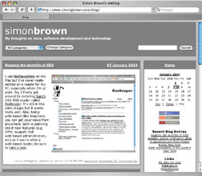
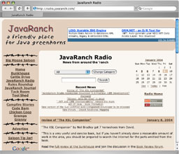
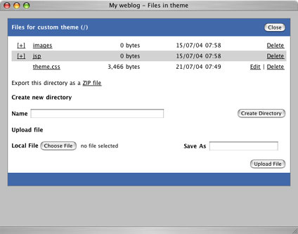
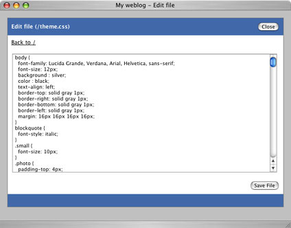

|
Pebble supports the notion of themes so that you can personalize the look and feel of your blog. The following images show examples of how Pebble can be made to look different without a great deal of effort.


Selecting a Theme
By default, your blog will use the standard Pebble theme called default. To change this, click the Blog properties link after logging in and choose an alternative theme from the dropdown list. All the themes shipped with Pebble can be found in the themes sub-directory of the web application.
Editing your own Theme
Although Pebble is distributed with some pre-built themes, you may want to create your own. The way that Pebble allows you to do this is by providing a theme called custom (in single user mode) that you can edit via your web browser. This theme is created automatically by Pebble the first time that it is started. To edit your custom theme, click the Theme (custom) link after logging in.
From this page you can edit any of the resources (e.g. JSP, HTML or CSS) that your theme contains. To edit a particular resource, just navigate to it from the list and click the Edit link. When you have made the relevant changes, click the Save File button. The changes should be reflected immediately on your blog.
You can also upload new files and delete existing files from your theme. To upload an image, the procedure is the same as for uploading images and files to your blog. In your theme pages, The <pebble:theme/> tag can be used to represent the URI of the current theme and this is used for referencing images and other resources (see included themes for examples).
Storage of your Theme
When Pebble starts up, it restores your theme from the blog.dir/theme directory to the themes/custom directory of the webapp and when Pebble is running, any changes to your theme are also made to the blog.dir/theme directory. The benefit of this is that you don't have to copy your custom theme between web applications when upgrading Pebble.
|